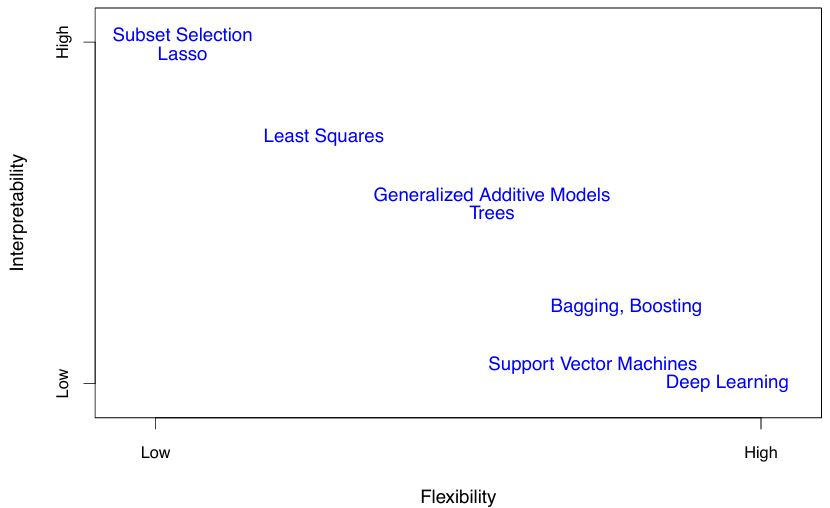
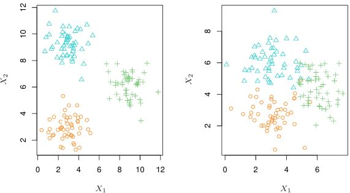

Estimating \(f\) - Concepts and Considerations
Reason to estimate \(f\) - Prediction and Inference
Prediction
From a previous post, the error term \(\epsilon\) is a random error term that have approximately a mean of zero. In this setting, we can predict Y using \[ Y = \hat{f}(X)\] where \(\hat{f}\) is usually a black box - it’s exact form isn’t important if it gives accurate predictions for \(Y\). As an example, we use a patient’s blood measurements \(X\) to predict their risk \(Y\) of an adverse drug reaction, so we can avoid giving risky treatments.
The accuracy of \(\hat{Y}\) as a prediction for \(Y\) depends on:
- Reducible error
- Happens when \(\hat{f}\) is not a perfect estimate of \(f\)
- Can be reduced by using better statistical learning methods
- Irreducible error
- Even with a perfect estimate \(\hat{Y} = f(X)\) errors remain due to the random noise term \(\epsilon\)
- May contain variables that affect \(Y\) but are not recorded, so \(f\) cannot use them
- May include natural day-to-day variation in outcomes (e.g., patient’s health status, drug manufacturing differences)
The focus of statistical learning is on techniques for estimating \(f\) to minimize the reducible error.
Inference
The goal of inference is not necessarily to make predictions for \(Y\), but to understand the association between \(Y\) and its predictors \(X_1, \dots, X_p\). Therefore, we need to know the exact form of \(\hat{f}\).
Key questions in inference:
- Identify important predictors: Only a small subset of variables may meaningfully affect \(Y\).
- Understand relationships:
- Direction (positive or negative association)
- Possible interactions with other predictors
- Model form
- Determine if a simple linear model is sufficient or if a more complex, nonlinear approach is needed.
- Understand relationships:
Prediction and Inference Summary
- Prediction example:
- Direct marketing campaign: Predict likelihood of positive response using demographic predictors
- Goal is accurate prediction, not understanding the relationship between each predictor and response
- Inference example:
- Advertising data: questions about which media affect sales, size of effects, and marginal gains from TV ads
- Goal is understanding associations between predictors and response
- Both prediction and inference:
- Real estate: predicting house price (prediction) vs estimating impact of each feature (inference).
The Trade-Off Between Prediction Accuracy and Model Interpretability

Statistical learning methods vary in flexibility - some, like linear regression, can model only simple relationships, while others, like splines, boosting, and neural networks, can capture highly complex patterns.
- Less flexible methods (e.g. linear regression, lasso) are often preferred for inference because they are more interpretable
- More flexible methods (e.g. Generalized Additive Models, boosting, neural networks) can model complex relationships but are harder to interpret
- For prediction-focused tasks, flexibility can help but also risks overfitting, sometimes making less flexible models more accurate.
Choosing the right method involves balancing flexibility, interpretability, and risk of overfitting.
Classifying statistical learning problems as:
- Supervised
- Unsupervised
Supervised Learning
For this domain, each observation or input has an associated response. The goal is to fit a model that relates the response to the predictors, with the hopes of accurately predicting the response (Prediction) or understanding the relationship between the predictor and the response (Inference). Examples include:
- Linear regression, Logistic regression
- Generalized Additive Models, Boosting, Support Vector Machines
Unsupervised Learning
Here, we observe a vector of measurements, but there is no associated response. In a way, there is no north star; in a way, we are working blind. We lack a response variable that supervises our model. We are only concerned about understanding the relationships between the given variables or observations. Examples include:
- Cluster analysis, where we find structure or patterns among observations

Above is an example of a clustering analysis using two variables. The left plot shows that groups are well separated, while the right plot shows some overlapping clusters, making perfect assignments impossible. High dimensional data with many variables can also make visual inspection impractical - thus automated clustering methods are essential.
Semi-supervised learning
Sometimes, only part of the data set has both predictors and responses, while the rest has predictors only. This happens when predictors are cheap to collect but responses are costly. The goal then is to use methods that leverage both labeled and unlabeled data.
Selecting a statistical learning method in Supervised Learning
The type of response variable determines the nature of the problem: if the response is quantitative, it is treated as a regression task, whereas if the response is qualitative, it is addressed as a classification task. However, whether the predictors are qualitative or quantitative is generally considered less important.
Regression task
- When response variable is quantitative
- Age, height, income
- House value, stock price
Classification task
- When response variable is qualitative
- Marital status (married or not)
- Product brand purchased (brand A, B, or C)
- Cancer diagnosis (Acute Myelogenous Leukemia, Acute Lymphoblastic Leukemia, No Leukemia)